Hi all,
I am stoked that I get to have Ryan Soares join the blog today. If you missed it last week Ryan was named as part of the Tableau Public Ambassadors cohort for this year. Congratulations Ryan!
You can follow Ryan on Tableau Public, here.CJ: Ryan, thanks for joining. I am so pleased to have another avid sports fan join the site. For someone that is new to your profile. How would you personally describe your style? Has your style developed from a combination of your public work and time in developer / consultant roles?R: Thanks for having me CJ! The style of my work has changed over the 6 years I’ve been an author on Tableau Public. At first, my public work was mostly experimentation with different visualizations and designs as I was learning the tool. Over time I’ve really honed in on simplifying my visualizations so that they can be consumed and understood easily, which shows in the designs of my recent work. I want to make life easy for the audience so I try to reduce complexity where I can to speed up their time to insight. This does follow from my professional work as a visual analytics consultant, as quick insights are always desired. To me, data visualization is about effective communication of information and insights, so I try to balance both creativity and simplicity in my work. Sometimes striving for an eye-catching viz might take away from how understandable it is, so I always start simple and be creative when appropriate.CJ: You have a fantastic array of sports visuals that I’m hoping to dive into, to really understand some of your thoughts behind each one. Let's start with the Euro’s. A personal favorite of mine is your Euros 2024 squad visual. Were you surprised by any country's domestic league representation? In your opinion how much do you think this impacts how well teams gel when it comes to the euros?
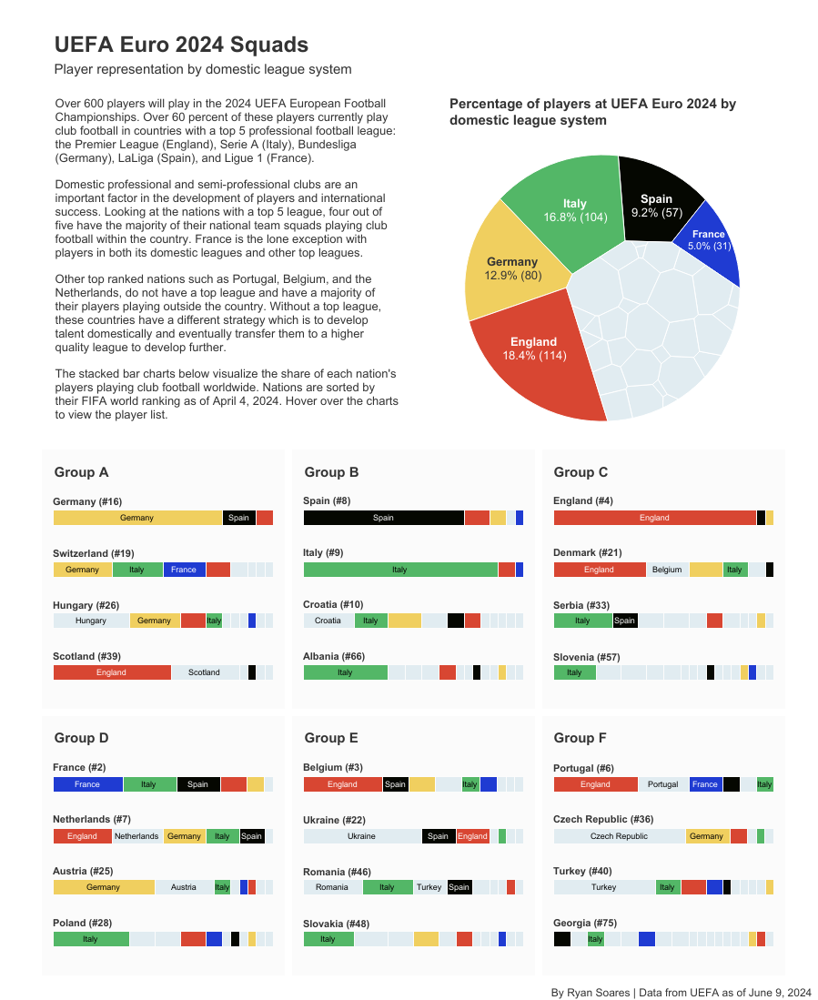
R: It was interesting to see the different strategies that nations have for developing players internationally. Team’s with a top domestic league have the advantage since they have a higher base for player development (England is a great example with the Premier League). Countries without a domestic league have to get players into the top leagues so they can play higher quality football and then contribute to the national team. This can be seen in the viz with France, Netherlands, and Portugal. As a Canadian, our men’s national team is continuing in this direction with more players securing transfers to European leagues after the Copa America this summer.In my opinion, I don’t think where players play has a major impact on team cohesion since players often progress together through the national team ranks. The golden generations of Croatia and Belgium are good examples since the players came into the national team together but many did not play in the country’s domestic league. Even Argentina only had one player in their domestic league in their World Cup 2022 squad. Having a top domestic league doesn’t directly translate to success, but it does provide a solid base for developing players.C: Your visual on age and experience also caught my eye. It is a wonderful way of letting someone understand a story without having to add written verbiage. The grayed previous competition countries give additional context. Why did you choose to use a scatter plot in this manner?
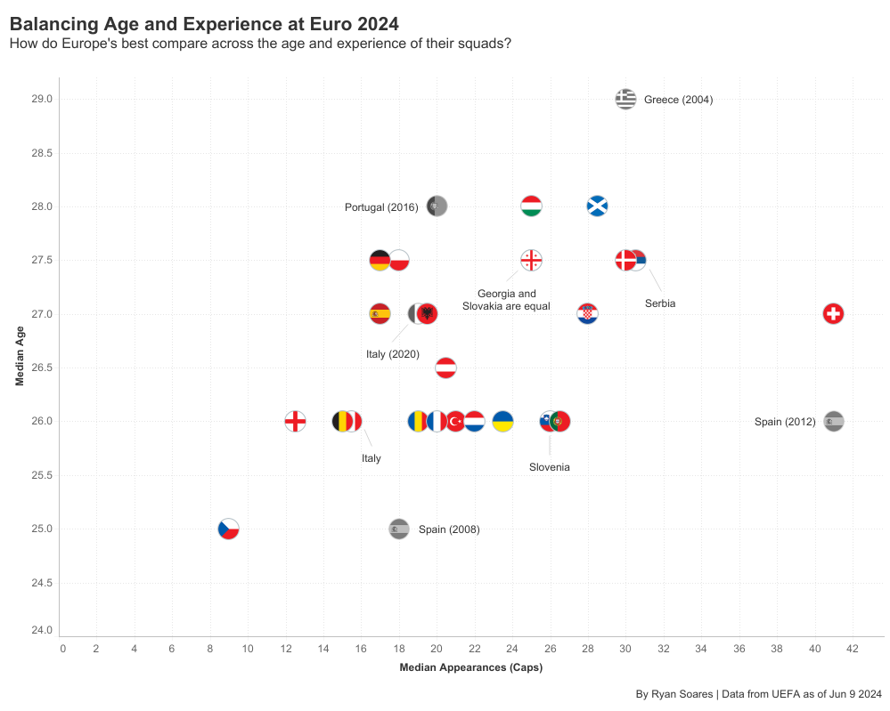
R: I thought the data really fit well in a scatter plot because it was spread out enough where you can see the differences but also group together similar countries. It was interesting to me that many of the tournament favorites had the same median age, but differed in the experience of their squads with England being the least experienced (but still made the final!). I wanted to add in the previous European champions to see if there were any similarities with current squads, but rather this highlighted some outliers in Greece ‘04 and Spain ‘12 (kudos to my colleague Steven Scott for suggesting the greyscale color). There were many stories to pick out and comparisons to make with the scatter plot, which is why I went with it!CJ: Your PGA Tour Toughest Courses is one of the best functioning table views on Tableau Public. You spoke on Linkedin on how it uses Tableau parameter actions and dynamic zone visibility to create a drill-down within the table. Could you give us some more in depth technical detail as to how someone could create the same?
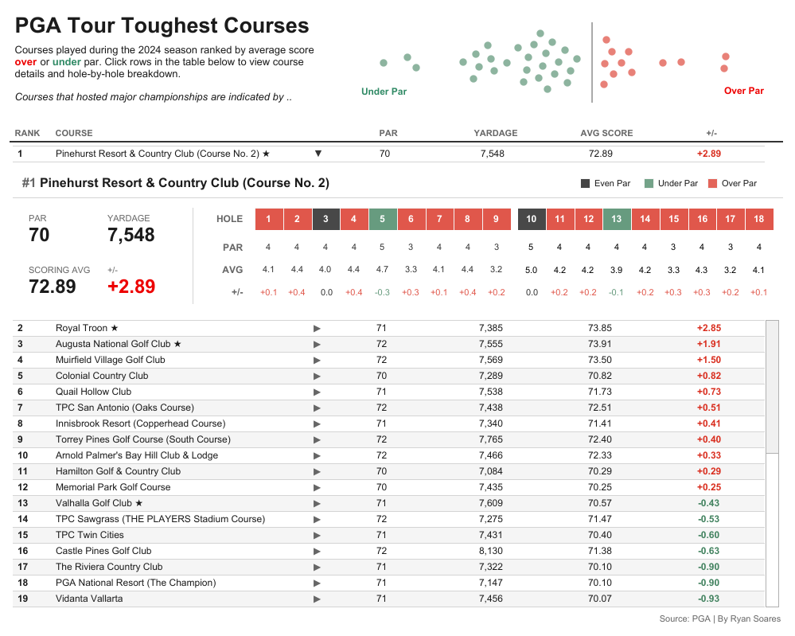
R: I have to credit Lorna Brown with the approach for the drill-down table as she used it for her Workout Wednesday challenge visualization. I built upon this by adding a dynamic zone container in the drill-down.While it may seem like one table (I hope), there are actually three components that are stacked on top of each other: a table, a dynamic zone container, and a second table. There is one parameter for the course name and a parameter action sets it to the course selected by the user. On each of the table sheets, a calculation determines the rank of the course selected in the parameter and accordingly the sheets are filtered to display courses below and above the selected rank. The dynamic zone container is set to show when a value is selected in the parameter and the series of sheets are filtered for the selected course in a dashboard action filter, creating the drill-down effect. I highly recommend downloading Lorna’s workbook to see all this in more detail!CJ: I am guessing that basketball may be one of your favourite sports given the number of visualisations on it! You don’t shy away from a well designed viz in tooltip. How do you decide the amount of detail that needs to be on the page, vs shown in the tooltip for your top scorers by zone and fantasy basketball visual?
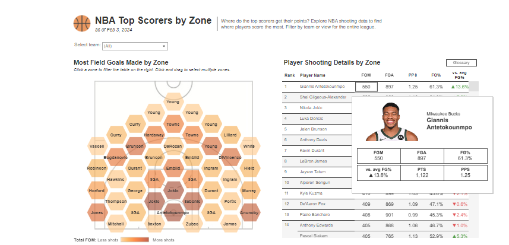
R: I approach this decision by thinking about what information is critical for the user to draw insight from the viz for the particular use case. This information stays on the page so it can be consumed immediately by the user. Any secondary information that is not critical goes into the tooltips and the user can view it if they need extra detail. I treat tooltips as an interactive component that the user can choose to use to enhance analysis.I designed both of these visualizations to function as tools for the user to explore. I included a key question in the sub-title that I am trying to answer through the viz. Each viz has a main visual up front (scatter plot and heat map) which is the basis for the viz and provides the main insight answering the key question. The tooltips contain additional details on the stats and trends, but this is not crucial information for the user.
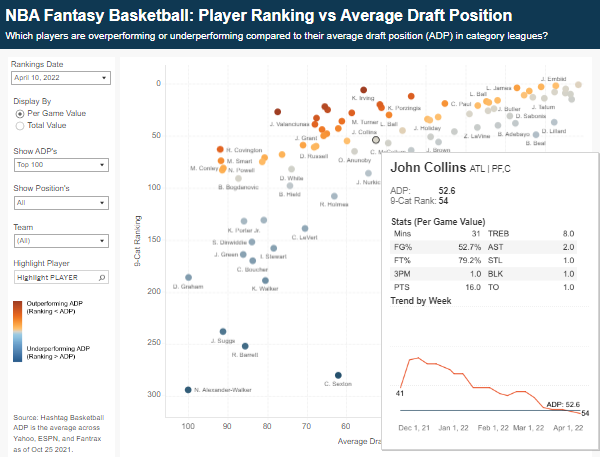
CJ: I had such a choice when looking for great trellis charts on your public profile. You had visuals on the olympics, NBA and the tour de france. What was it about these stories that made a comparative view between teams or athletes displayed in this way?
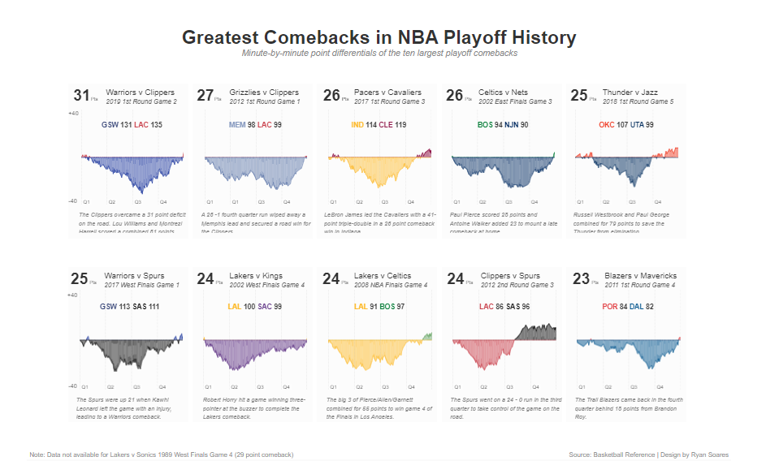
R: As I’ve mentioned in a previous question, my style is all about simplicity. I really love trellis charts because they are so simple to understand and compare across different dimensions. There is only one chart type, so it is easy from a user comprehension perspective as they only have to understand a single chart. Sports data fits well because there are many dimensions to analyze across such as by year, sport, team, time, and so on. In these three visualizations, comparisons can be made very easily and the user can pick out specific points of interest. Particularly in the Margins of Victory viz, I enjoyed being able to pick out specific stages and watching back highlights of how the race unfolded.An important point to mention here on trellis charts is that fixed axes are important to have accurate comparisons and avoid misleading the audience.
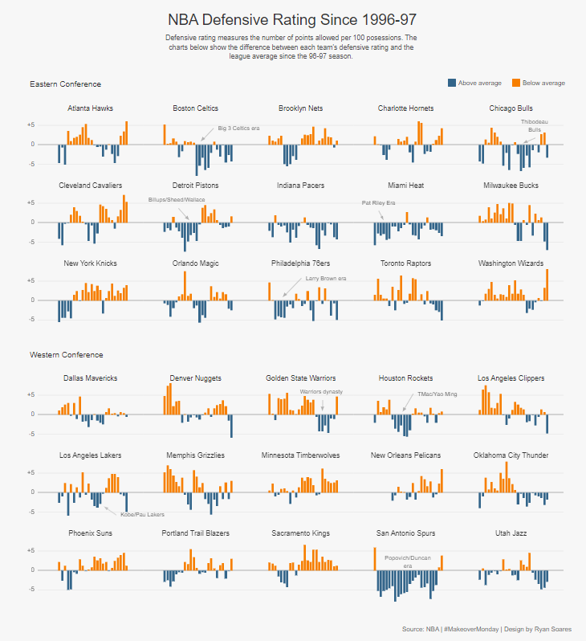
C: Looking specifically at the Olympics visual of medallists age distribution - I loved some of your call outs that most medalists are in their early to mid 20’s for most disciplines, with a few outliers when we look at perhaps equestrian or skateboarding. What I’d love to know though, is maybe your top 3 moments from the games as a collective?
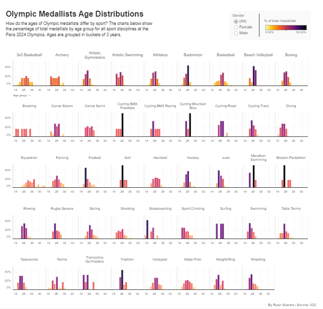
R: It’s hard to pick just 3 moments since the Games were great, but here they are:
Djokovic winning the gold medal in men’s tennis over Alcaraz. It was a great match and a huge achievement for Djokovic, so it was awesome and exciting to watch.
USA vs Serbia semi-final in men’s basketball. That was one of the best basketball games I’ve seen with how much passion was shown by the stars of Team USA. The Americans were seriously threatened by Serbia and at risk of going out, so seeing them come back and winning the way they did was very entertaining.
Remco Evenepoel double gold medals in the time trial and road race. He had a podium finish in this year’s Tour de France and followed it up with two Olympic golds. The picture of him celebrating after crossing the finish line with the Eiffel tower in the background was iconic.
Apart from this, I really liked the venues for some of the events. I’m not a follower of fencing but I watched it since the Grand Palais was a great backdrop. Beach volleyball and road cycling in front of the Eiffel Tower were also nice locations.CJ: As part of a Viz Games run internally at your company, you collaborated on a wonderful infographic design for the olympics and progressing global issues. Can you speak a little to your choices behind the wide print style and the order you chose to showcase the different issues?R: Firstly, I have to mention my amazing colleagues and teammates Maggie Eng and Steven Scott as I couldn’t have done this alone. It was a true team effort with Steven focusing on storytelling, Maggie on design, and myself on Tableau development. We decided on the horizontal scroll layout for the story to be read in a linear fashion. It also allowed the design elements to flow nicely into one another and for the tabbing functionality to work well. The choice of athlete order was based on how strong we felt the connection would be with the Paris 2024 Olympics and the audience. Gender equality was a big achievement at this year’s Games, so we started with this issue and closed with environmental sustainability which was a focus for Paris 2024 and will be for future Olympic Games. Despite the order, each issue holds the same importance as they are priorities for the IOC to address now and progress towards in the future.We did a walkthrough of the design approach at the August Sports TUG event which can be found here.
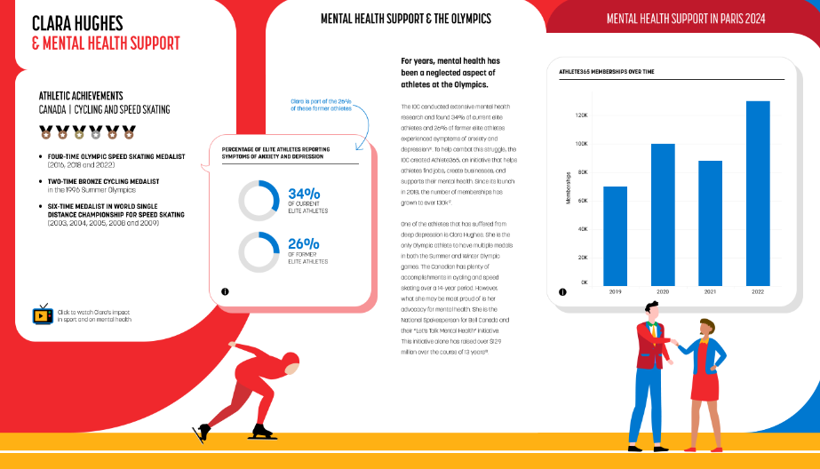
CJ: You’ve recently started the Sports Tableau User Group alongside Mo, Fred and Steven. What exciting things can we expect from it in months to come?
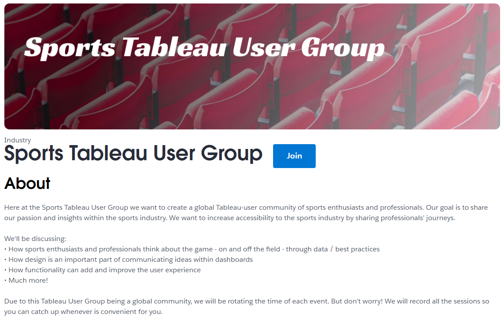
R: We had our first Sports TUG event in early August and it was great to get started and interact with the Tableau sports community! Our events are going to be a mix of hearing experiences from professionals in the sports industry and sharing Tableau know-how related to sports visualizations. Our goal is to increase accessibility to the sports industry by sharing the community’s passion and insights on data analytics in sports. We’ll soon be sharing details about our next event taking place in November!CJ: Thank you for talking through some of your visuals! Are there individuals in the community that you look to for inspiration, both sports and wider? R: The community has always been a great source of inspiration so there are too many people I could mention here. There is lots of good content being produced on a daily basis, so kudos to everyone who shares their work publicly as I’m sure it has inspired many other authors like me. I want to thank the Makeover Monday organizers, both current and former, for the platform they provide for learning and getting involved in the community. I started with Tableau through Makeover Monday so it has been an important part of my journey. Tableau aside, I enjoy data-driven journalism type work from publications such as The Pudding, FlowingData, Reuters, and the New York Times. I’ve also recently discovered SportsBall on Instagram which does some very fun hand drawn sports data visualizations.LOGGING OFF,
CJ
 CJ: Ryan, thanks for joining. I am so pleased to have another avid sports fan join the site. For someone that is new to your profile. How would you personally describe your style? Has your style developed from a combination of your public work and time in developer / consultant roles?
R: Thanks for having me CJ! The style of my work has changed over the 6 years I’ve been an author on Tableau Public. At first, my public work was mostly experimentation with different visualizations and designs as I was learning the tool. Over time I’ve really honed in on simplifying my visualizations so that they can be consumed and understood easily, which shows in the designs of my recent work. I want to make life easy for the audience so I try to reduce complexity where I can to speed up their time to insight. This does follow from my professional work as a visual analytics consultant, as quick insights are always desired. To me, data visualization is about effective communication of information and insights, so I try to balance both creativity and simplicity in my work. Sometimes striving for an eye-catching viz might take away from how understandable it is, so I always start simple and be creative when appropriate.
CJ: You have a fantastic array of sports visuals that I’m hoping to dive into, to really understand some of your thoughts behind each one.
Let's start with the Euro’s. A personal favorite of mine is your Euros 2024 squad visual. Were you surprised by any country's domestic league representation? In your opinion how much do you think this impacts how well teams gel when it comes to the euros?
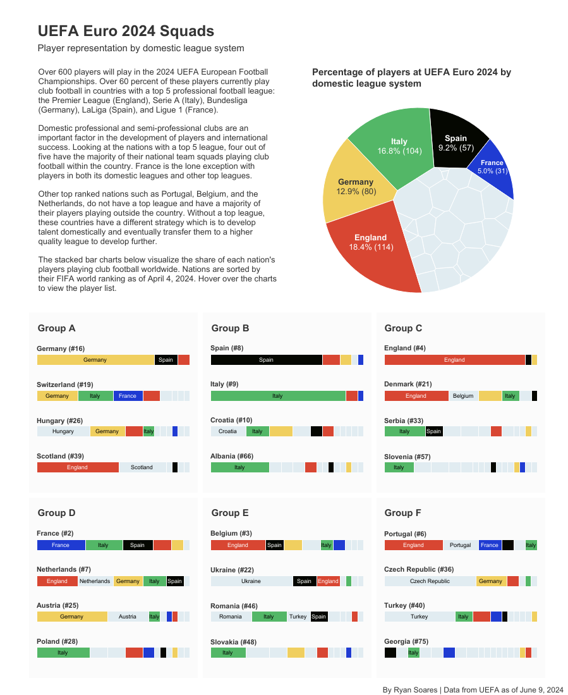
R: It was interesting to see the different strategies that nations have for developing players internationally. Team’s with a top domestic league have the advantage since they have a higher base for player development (England is a great example with the Premier League). Countries without a domestic league have to get players into the top leagues so they can play higher quality football and then contribute to the national team. This can be seen in the viz with France, Netherlands, and Portugal. As a Canadian, our men’s national team is continuing in this direction with more players securing transfers to European leagues after the Copa America this summer.
In my opinion, I don’t think where players play has a major impact on team cohesion since players often progress together through the national team ranks. The golden generations of Croatia and Belgium are good examples since the players came into the national team together but many did not play in the country’s domestic league. Even Argentina only had one player in their domestic league in their World Cup 2022 squad. Having a top domestic league doesn’t directly translate to success, but it does provide a solid base for developing players.
C: Your visual on age and experience also caught my eye. It is a wonderful way of letting someone understand a story without having to add written verbiage. The grayed previous competition countries give additional context. Why did you choose to use a scatter plot in this manner?
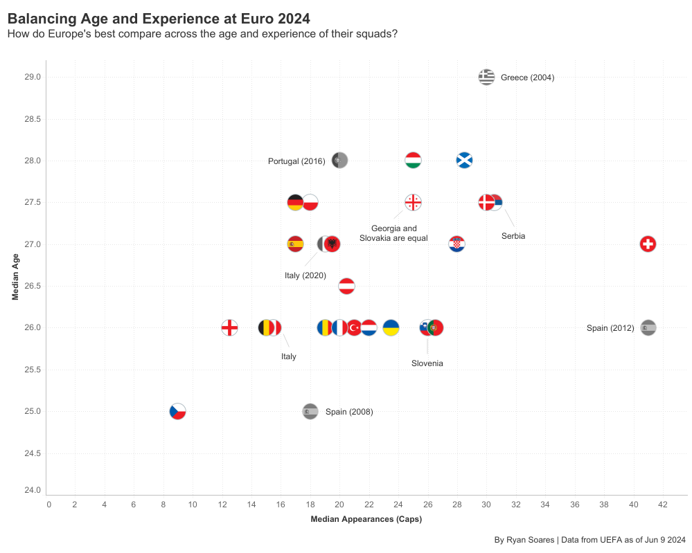
R: I thought the data really fit well in a scatter plot because it was spread out enough where you can see the differences but also group together similar countries. It was interesting to me that many of the tournament favorites had the same median age, but differed in the experience of their squads with England being the least experienced (but still made the final!). I wanted to add in the previous European champions to see if there were any similarities with current squads, but rather this highlighted some outliers in Greece ‘04 and Spain ‘12 (kudos to my colleague Steven Scott for suggesting the greyscale color). There were many stories to pick out and comparisons to make with the scatter plot, which is why I went with it!
CJ: Your PGA Tour Toughest Courses is one of the best functioning table views on Tableau Public. You spoke on Linkedin on how it uses Tableau parameter actions and dynamic zone visibility to create a drill-down within the table. Could you give us some more in depth technical detail as to how someone could create the same?
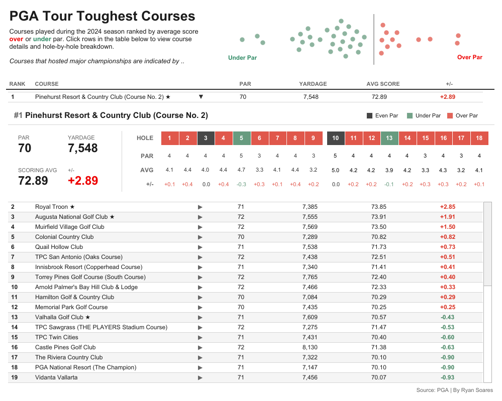
R: I have to credit Lorna Brown with the approach for the drill-down table as she used it for her Workout Wednesday challenge visualization. I built upon this by adding a dynamic zone container in the drill-down.
While it may seem like one table (I hope), there are actually three components that are stacked on top of each other: a table, a dynamic zone container, and a second table. There is one parameter for the course name and a parameter action sets it to the course selected by the user. On each of the table sheets, a calculation determines the rank of the course selected in the parameter and accordingly the sheets are filtered to display courses below and above the selected rank. The dynamic zone container is set to show when a value is selected in the parameter and the series of sheets are filtered for the selected course in a dashboard action filter, creating the drill-down effect. I highly recommend downloading Lorna’s workbook to see all this in more detail!
CJ: I am guessing that basketball may be one of your favourite sports given the number of visualisations on it! You don’t shy away from a well designed viz in tooltip. How do you decide the amount of detail that needs to be on the page, vs shown in the tooltip for your top scorers by zone and fantasy basketball visual?
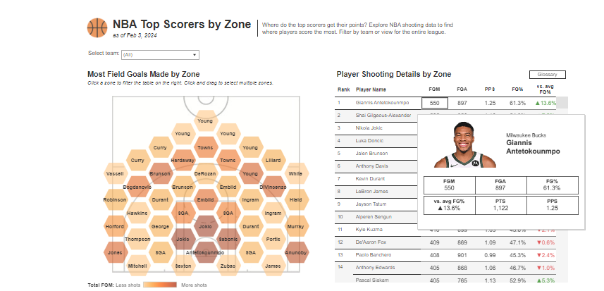
R: I approach this decision by thinking about what information is critical for the user to draw insight from the viz for the particular use case. This information stays on the page so it can be consumed immediately by the user. Any secondary information that is not critical goes into the tooltips and the user can view it if they need extra detail. I treat tooltips as an interactive component that the user can choose to use to enhance analysis.
I designed both of these visualizations to function as tools for the user to explore. I included a key question in the sub-title that I am trying to answer through the viz. Each viz has a main visual up front (scatter plot and heat map) which is the basis for the viz and provides the main insight answering the key question. The tooltips contain additional details on the stats and trends, but this is not crucial information for the user.
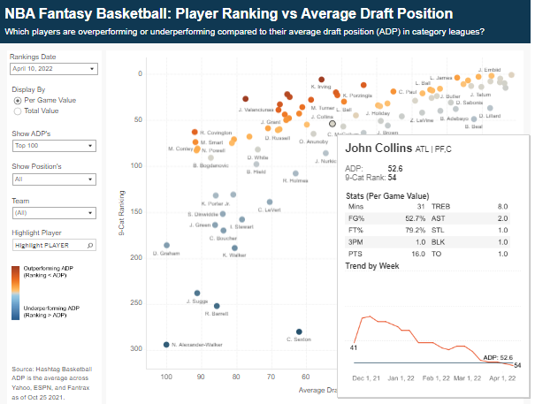
CJ: I had such a choice when looking for great trellis charts on your public profile. You had visuals on the olympics, NBA and the tour de france. What was it about these stories that made a comparative view between teams or athletes displayed in this way?
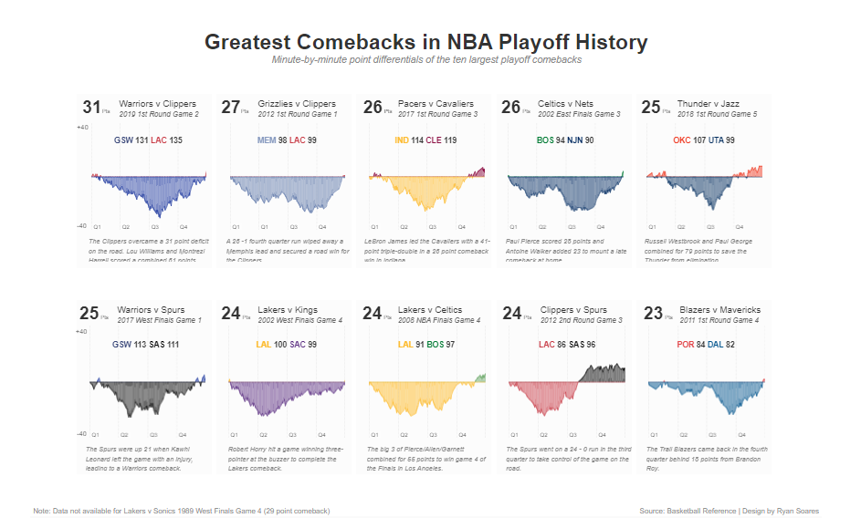
R: As I’ve mentioned in a previous question, my style is all about simplicity. I really love trellis charts because they are so simple to understand and compare across different dimensions. There is only one chart type, so it is easy from a user comprehension perspective as they only have to understand a single chart. Sports data fits well because there are many dimensions to analyze across such as by year, sport, team, time, and so on. In these three visualizations, comparisons can be made very easily and the user can pick out specific points of interest. Particularly in the Margins of Victory viz, I enjoyed being able to pick out specific stages and watching back highlights of how the race unfolded.
An important point to mention here on trellis charts is that fixed axes are important to have accurate comparisons and avoid misleading the audience.
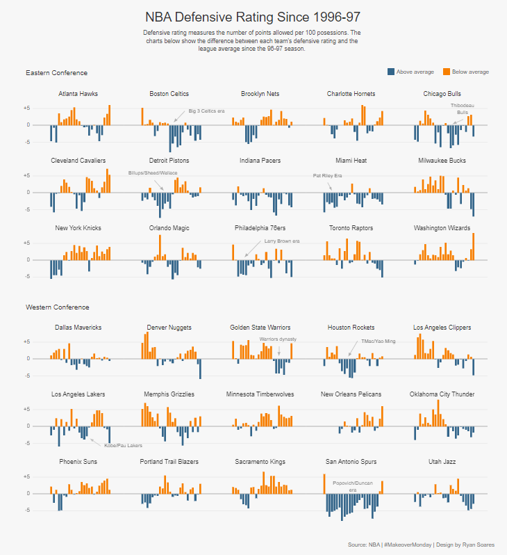
C: Looking specifically at the Olympics visual of medallists age distribution - I loved some of your call outs that most medalists are in their early to mid 20’s for most disciplines, with a few outliers when we look at perhaps equestrian or skateboarding. What I’d love to know though, is maybe your top 3 moments from the games as a collective?
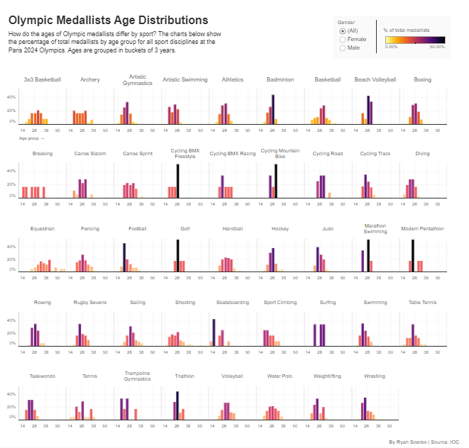
R: It’s hard to pick just 3 moments since the Games were great, but here they are:
CJ: Ryan, thanks for joining. I am so pleased to have another avid sports fan join the site. For someone that is new to your profile. How would you personally describe your style? Has your style developed from a combination of your public work and time in developer / consultant roles?
R: Thanks for having me CJ! The style of my work has changed over the 6 years I’ve been an author on Tableau Public. At first, my public work was mostly experimentation with different visualizations and designs as I was learning the tool. Over time I’ve really honed in on simplifying my visualizations so that they can be consumed and understood easily, which shows in the designs of my recent work. I want to make life easy for the audience so I try to reduce complexity where I can to speed up their time to insight. This does follow from my professional work as a visual analytics consultant, as quick insights are always desired. To me, data visualization is about effective communication of information and insights, so I try to balance both creativity and simplicity in my work. Sometimes striving for an eye-catching viz might take away from how understandable it is, so I always start simple and be creative when appropriate.
CJ: You have a fantastic array of sports visuals that I’m hoping to dive into, to really understand some of your thoughts behind each one.
Let's start with the Euro’s. A personal favorite of mine is your Euros 2024 squad visual. Were you surprised by any country's domestic league representation? In your opinion how much do you think this impacts how well teams gel when it comes to the euros?
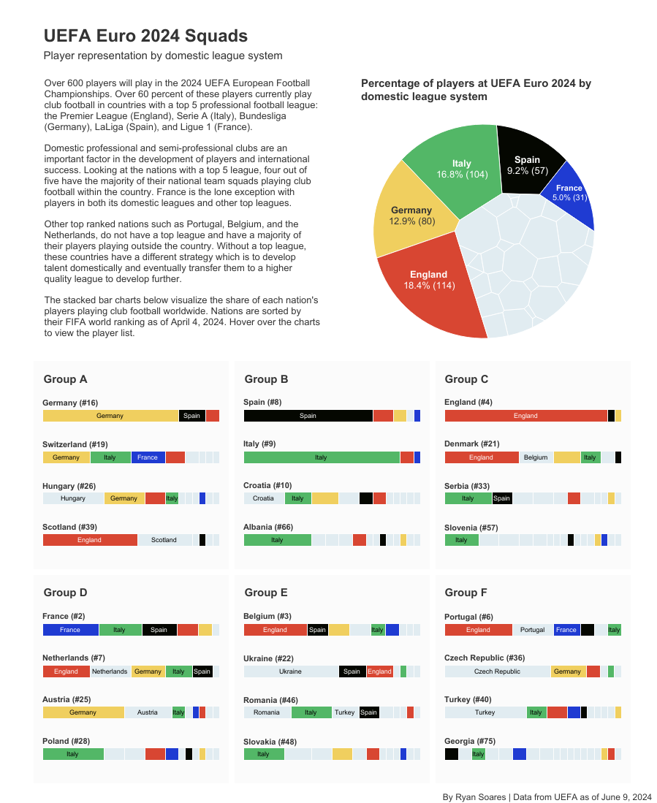
R: It was interesting to see the different strategies that nations have for developing players internationally. Team’s with a top domestic league have the advantage since they have a higher base for player development (England is a great example with the Premier League). Countries without a domestic league have to get players into the top leagues so they can play higher quality football and then contribute to the national team. This can be seen in the viz with France, Netherlands, and Portugal. As a Canadian, our men’s national team is continuing in this direction with more players securing transfers to European leagues after the Copa America this summer.
In my opinion, I don’t think where players play has a major impact on team cohesion since players often progress together through the national team ranks. The golden generations of Croatia and Belgium are good examples since the players came into the national team together but many did not play in the country’s domestic league. Even Argentina only had one player in their domestic league in their World Cup 2022 squad. Having a top domestic league doesn’t directly translate to success, but it does provide a solid base for developing players.
C: Your visual on age and experience also caught my eye. It is a wonderful way of letting someone understand a story without having to add written verbiage. The grayed previous competition countries give additional context. Why did you choose to use a scatter plot in this manner?
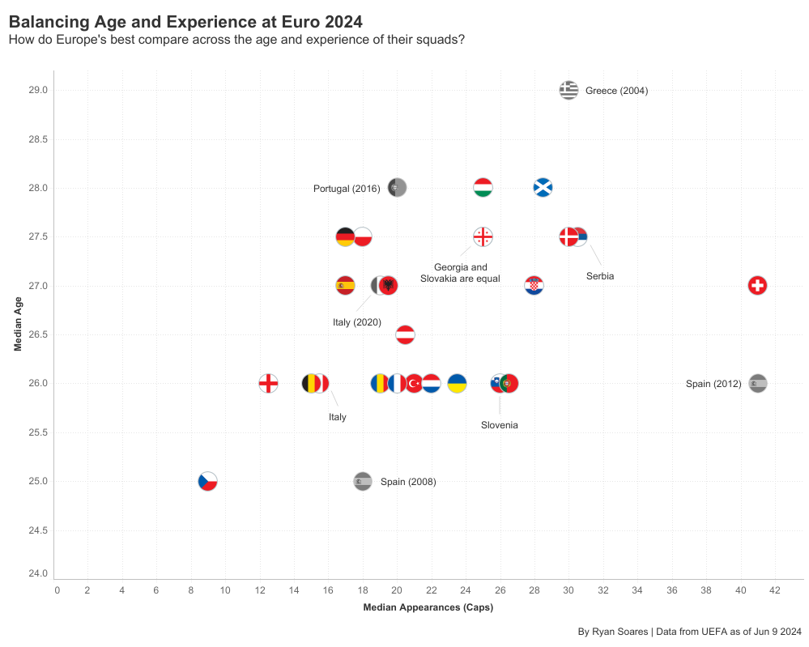
R: I thought the data really fit well in a scatter plot because it was spread out enough where you can see the differences but also group together similar countries. It was interesting to me that many of the tournament favorites had the same median age, but differed in the experience of their squads with England being the least experienced (but still made the final!). I wanted to add in the previous European champions to see if there were any similarities with current squads, but rather this highlighted some outliers in Greece ‘04 and Spain ‘12 (kudos to my colleague Steven Scott for suggesting the greyscale color). There were many stories to pick out and comparisons to make with the scatter plot, which is why I went with it!
CJ: Your PGA Tour Toughest Courses is one of the best functioning table views on Tableau Public. You spoke on Linkedin on how it uses Tableau parameter actions and dynamic zone visibility to create a drill-down within the table. Could you give us some more in depth technical detail as to how someone could create the same?
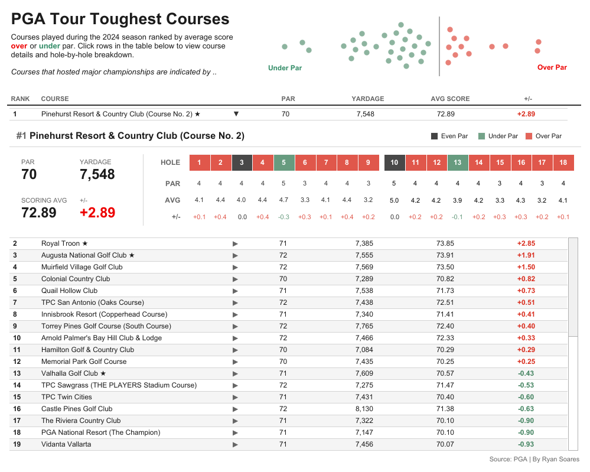
R: I have to credit Lorna Brown with the approach for the drill-down table as she used it for her Workout Wednesday challenge visualization. I built upon this by adding a dynamic zone container in the drill-down.
While it may seem like one table (I hope), there are actually three components that are stacked on top of each other: a table, a dynamic zone container, and a second table. There is one parameter for the course name and a parameter action sets it to the course selected by the user. On each of the table sheets, a calculation determines the rank of the course selected in the parameter and accordingly the sheets are filtered to display courses below and above the selected rank. The dynamic zone container is set to show when a value is selected in the parameter and the series of sheets are filtered for the selected course in a dashboard action filter, creating the drill-down effect. I highly recommend downloading Lorna’s workbook to see all this in more detail!
CJ: I am guessing that basketball may be one of your favourite sports given the number of visualisations on it! You don’t shy away from a well designed viz in tooltip. How do you decide the amount of detail that needs to be on the page, vs shown in the tooltip for your top scorers by zone and fantasy basketball visual?
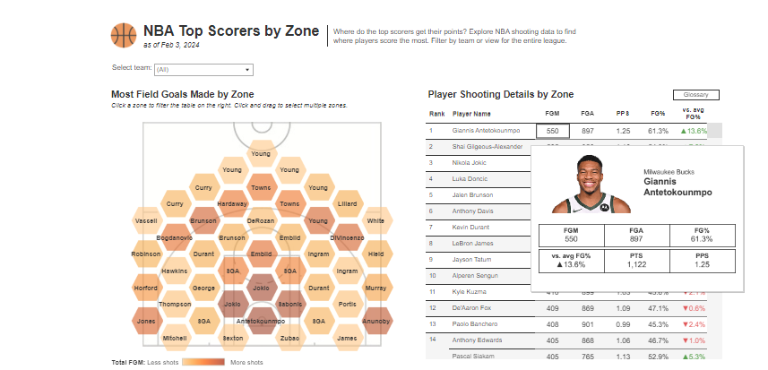
R: I approach this decision by thinking about what information is critical for the user to draw insight from the viz for the particular use case. This information stays on the page so it can be consumed immediately by the user. Any secondary information that is not critical goes into the tooltips and the user can view it if they need extra detail. I treat tooltips as an interactive component that the user can choose to use to enhance analysis.
I designed both of these visualizations to function as tools for the user to explore. I included a key question in the sub-title that I am trying to answer through the viz. Each viz has a main visual up front (scatter plot and heat map) which is the basis for the viz and provides the main insight answering the key question. The tooltips contain additional details on the stats and trends, but this is not crucial information for the user.
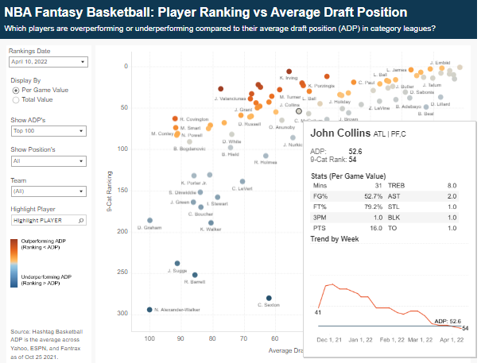
CJ: I had such a choice when looking for great trellis charts on your public profile. You had visuals on the olympics, NBA and the tour de france. What was it about these stories that made a comparative view between teams or athletes displayed in this way?
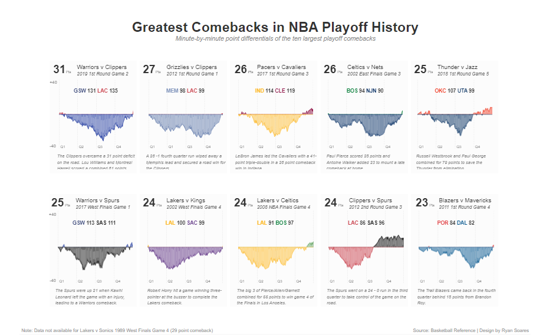
R: As I’ve mentioned in a previous question, my style is all about simplicity. I really love trellis charts because they are so simple to understand and compare across different dimensions. There is only one chart type, so it is easy from a user comprehension perspective as they only have to understand a single chart. Sports data fits well because there are many dimensions to analyze across such as by year, sport, team, time, and so on. In these three visualizations, comparisons can be made very easily and the user can pick out specific points of interest. Particularly in the Margins of Victory viz, I enjoyed being able to pick out specific stages and watching back highlights of how the race unfolded.
An important point to mention here on trellis charts is that fixed axes are important to have accurate comparisons and avoid misleading the audience.
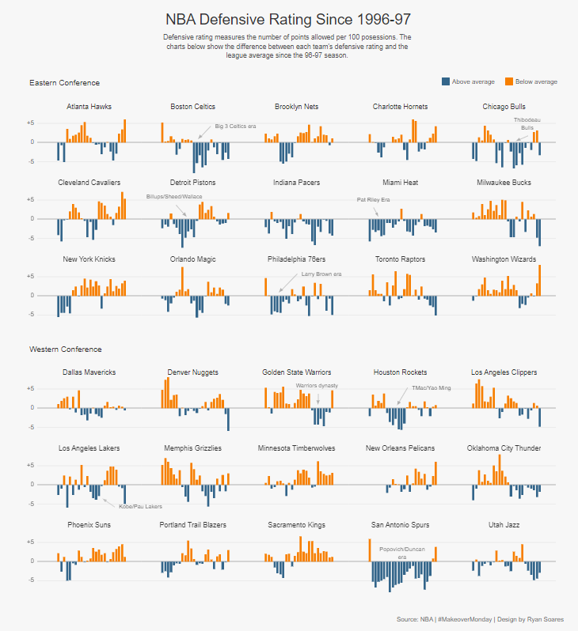
C: Looking specifically at the Olympics visual of medallists age distribution - I loved some of your call outs that most medalists are in their early to mid 20’s for most disciplines, with a few outliers when we look at perhaps equestrian or skateboarding. What I’d love to know though, is maybe your top 3 moments from the games as a collective?
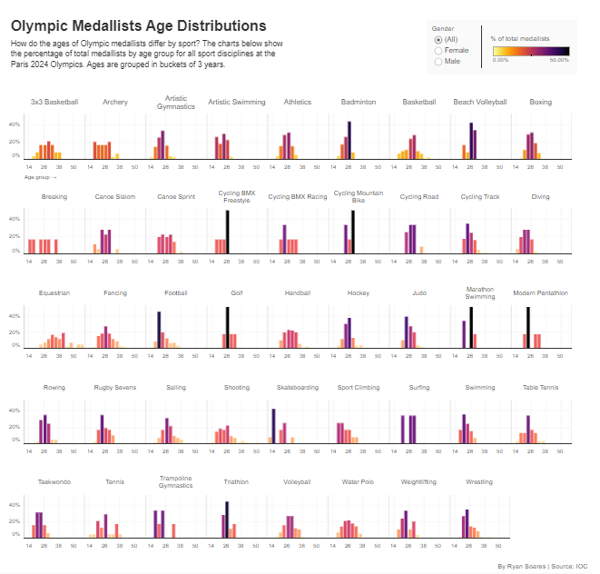
R: It’s hard to pick just 3 moments since the Games were great, but here they are: